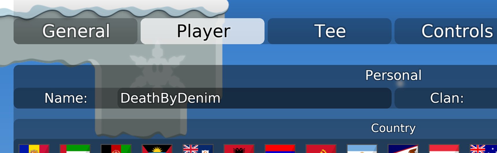

Click the name of your OS on the left of the most recent version. Extract the file wherever you like and start playing.
Click on Settings and choose the Player tab. You can fill in your name so we can recognize you when you join the server. The Tee tab will also let you customize your appearance.
To connect to the server, got back to the main menu and click Play.
At the bottom of the screen you can fill in the name of the server in the Host address field. Type {{ site.content.domain_name }} and press <Enter> or click Connect.
You should now be connected.